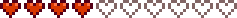

Haley
| Haley | |
 | |
| Information
| |
| Geburtstag | |
| Lebt in | Pelikan Stadt |
| Adresse | Weidengasse 2 |
| Familie |
|
| Ehe | Ja |
| Klinikbesuch | |
| Beste Geschenke | |
| “ | “Reich und berühmt zu sein, machten Haley während ihrer Schulzeit ein wenig eitel und eigensüchtig. Sie hat die Neigung dazu Menschen oberflächlich zu bewerten. Doch ist es für sie zu spät einen tieferen Sinn des Lebens zu finden? Findet sich da eine humorvolle und offene junge Dame unter ihrer mit Süßigkeiten überzogenen schale wieder?” |
| — Dev Update #12 |
Haley ist eine Dorfbewohnerin welche in der Stadt Pelikan lebt. Sie ist einer der 12 Charaktere, die man heiraten kann.
Tagesablauf
Ihr Verhalten ändert sich, sobald es draußen regnet oder schneit. Sie wird ebenfalls nicht an Dienstagen bis Sonntagen zum Springbrunnen gehen, wenn es regnet.
|
Montag
Dienstag
Mittwoch
Donnerstag
Freitag
Samstag
Sonntag
Bei Regen
|
|
Montag
Dienstag
Mittwoch
Donnerstag
Freitag
Samstag
Sonntag
Bei Regen
|
|
Montag
Dienstag
Mittwoch
Donnerstag
Freitag
Samstag
Sonntag
Bei Regen
|
|
Montag
Dienstag
Mittwoch
Donnerstag
Freitag
Samstag
Sonntag
|
| Abweichungen | ||||||
|---|---|---|---|---|---|---|
|
Winter 9th
|
|
Montag
|
Beziehungen
Haley lebt zusammen mit ihrer Schwester Emily im Elternhaus. Sie übernehmen den Haushalt, da sich ihre Eltern vor zwei Jahren auf eine Weltreise begeben haben. Haley ist außerdem mit Alex befreundet.
Geschenke
- Hauptartikel: Freundschaft
- Siehe auch: Liste aller Geschenke
Du kannst Haley bis zu zwei Geschenke pro Woche geben (plus eines an
ihrem
Geburtstag), die deine Freundschaft mit
ihr
erhöht oder senkt. Geschenke zu
ihrem
Geburtstag ( 14 Frühling) haben 8-fache Wirkung und lösen einen einzigartigen Dialog aus.
14 Frühling) haben 8-fache Wirkung und lösen einen einzigartigen Dialog aus.
Bei beliebten Geschenken wird Haley sagen
| “ | “*aufschrei*... Du hast das für mich besorgt? Wow, <Name>, das ist das beste Geburtstagsgeschenk aller Zeiten!” |
Bei gemochten Geschenken wird Haley sagen
| “ | “Awwwww, du hast ein Geburtstagsgeschenk für mich? Also, ich mag es wirklich!” |
Bei neutralen Geschenken wird Haley sagen
| “ | “Für meinen Geburtstag? Danke.” |
Bei unbeliebten oder gehaßten Geschenken wird Haley sagen
| “ | “Ekelhaft! Du schenkst mir das an meinem Geburtstag? Was ist nur los mit dir?” |
Liebt
| “ | “Oh, das mag ich am liebsten!!” |
| Bild | Name | Beschreibung | Quelle | Zutaten |
|---|---|---|---|---|
| ||||
| Kokosnuss | Die Frucht einer Kokospalme. Findet viele kulinarischen Anwendungen. | Sammeln - Calico-Wüste | ||
| Obstsalat | Eine leckere Kombination verschiedener Sommerfrüchte. | Kochen | ||
| Pinke Torte | Kleine herzförmige Süßigkeiten sind darauf verstreut. | Kochen | ||
| Sonnenblume | Ein häufiger Irrglaube ist, dass die Blume sich immer der Sonne zuwendet. | Hofarbeit | ||
Mag
| “ | “*schock* Für mich? Danke dir!” |
| Bild | Name | Beschreibung | Quelle |
|---|---|---|---|
| |||
| Narzisse | Eine traditionelle Frühlingsblume, die ein nettes Geschenk abgibt. | Sammeln - Frühling | |
Neutral
| “ | “Danke dir. Ich liebe Geschenke.” |
| Bild | Name | Beschreibung | Quelle |
|---|---|---|---|
| |||
Mag Nicht
| “ | “Ugh... das ist so ein dummes Geschenk.” |
| Bild | Name | Beschreibung | Quelle |
|---|---|---|---|
| |||
| Pfifferling | Ein leckerer Pilz mit fruchtigem Duft und leicht pfeffrigem Geschmack. | Sammeln - Herbst | |
| Gewöhnlicher Pilz | Leicht nussig und von guter Konsistenz. | Sammeln - Herbst | |
| Löwenzahn | Nicht die schönste Blume, aber die Blätter geben einen guten Salat ab. | Sammeln - Frühling | |
| Ingwer | Diese scharfe, würzige Wurzel soll die Vitalität steigern. | Sammeln - Ingwerinsel | |
| Haselnuss | Das ist eine große Haselnuss! | Sammeln - Herbst | |
| Stechpalme | Die Blätter und grellroten Beeren sind eine beliebte Winterdekoration. | Sammeln - Winter | |
| Lauch | Ein leckerer Verwandter der Zwiebel. | Sammeln - Frühling | |
| Magmahut | Ein sehr seltener Pilz, der neben Lavatümpeln lebt. | Sammeln - Vulkan-Dungeon | |
| Morchel | Begehrt für ihren einzigartigen, nussigen Geschmack. | Sammeln - Frühling | |
| Violetter Pilz | Ein seltener Pilz, der tief in den Höhlen zu finden ist. | Sammeln - Minen | |
| Quarz | Ein klarer Kristall, der häufig in Höhlen und Minen gefunden wird. | Sammeln - Minen | |
| Schnee-Süßkartoffel | Diese kleine Süßkartoffel hat sich unter dem Schnee versteckt. | Sammeln - Winter | |
| Winterwurzel | Eine stärkehaltige Knolle. | Sammeln - Winter | |
*Beachte, dass verschenkte Dinosaurier-Eier als Artefakte und nicht Eier gelten.
Hasst
| “ | “Ekelhaft!” |
| Bild | Name | Beschreibung | Quelle |
|---|---|---|---|
| |||
| Lehm | Wird in der Herstellung und Konstruktion benutzt. | Sammeln - Hacke | |
| Prismatische Scherbe | Eine sehr seltene und mächtige Substanz unbekannter Herkunft. | Minen | |
| Wilder Meerrettich | Würzige Wurzeln, die im Frühling gefunden werden können. | Sammeln - Frühling | |
Filme und Snacks
- Hauptartikel: Kino
|
|
Herz Events
2 Herzen

Betritt Haley und Emily's Haus wenn sie beide zu Hause sind.
| Details |
|---|
| Haley und Emily streiten wegen der Reinigung unter den Couchkissen, wenn du ankommst.
Emily ist verärgert, dass Haley sich weigert, die Kissen zu reinigen. Haley sagt, sie habe sie letzte Woche gereinigt, und Emily denkt, dass ihre Schwester kindisch sei. Sie müssen den Konflikt lösen.
|
4 Herzen

Betritt Haley's Haus, wenn sie zu Hause ist.
| Details |
|---|
Haley hat Probleme damit ein Glas zu öffnen und bittet dich um Hilfe.
Nachdem du das Glas geöffnet hast sagt Haley, dass du stärker bist, als du aussiehst. Am nächsten Tag wird sie, in einem Gespräch mit ihr, sagen, dass sie ein Werkzeug gefunden hat, das ihr beim Öffnen von Gläsern hilft. |
6 Herzen

Gehe zwischen 10:00 Uhr und 16:00 Uhr zum Strand (nicht im Winter).
| Details |
|---|
Du findest Haley traurig vor, da sie das Armband ihrer Großmutter verloren hat.
Das Armband liegt rechts neben Elliotts Hütte hinter einem Strauch. Nachdem du ihr das Armband zurückgebracht hast, umarmt sie dich und sagt, dass sie nicht vergessen wird, was du für sie getan hast. |
8 Herzen

Gehe an einem sonnigen Tag zwischen 10 und 16 Uhr in den Zundersaftwald (nicht im Winter).
| Details | ||
|---|---|---|
| Haley steht vor Marnie's Ranch und macht Fotos. Als sie dich sieht, bittet sie dich, ein paar Fotos mit ihr zusammen zu machen. Da sie die Kühe total niedlich findet, fragt sie, wie man sich ihnen nähert. Sie klettert auf eine, fällt runter und landet im Dreck. Aber sie lacht nur und verlässt dich, um zu duschen. Am nächsten Morgen findest du einen Brief von ihr im Briefkasten:
|
10 Herzen

Betrete Haley's Haus wenn sie zu Hause ist.
| Details |
|---|
Haley zeigt dir ihre neue Dunkelkammer in der sie ihre Fotos entwickelt.
Haley fragt, was du jetzt tun willst.
Wenn du kurz danach noch mal mit ihr sprichst, sagt sie: "Das war schön" und das Portrait zeigt sie errötet. |
Gruppe Zehn Herzen Event

Wenn der Spieler unverheiratet ist, allen verfügbaren Junggesellinnen einen Blumenstrauß geschenkt hat, sowie mit jeder eine 10 Herzen Freundschaft, jedes 10-Herz-Ereignis gesehen hat und anschließend zu Haley/Emilys Haus geht, löst das eine Zwischensequenz aus.
| Details |
|---|
| Hat der Spieler eine Hasenpfote im Inventar, dann besteht die Zwischensequenz aus einer Klatsch-Szene über die Beziehung vom Bürgermeister Lewis und Marnie.
Hat der Spieler keine Hasenpfote im Inventar, drücken alle Junggesellinnen ihren Ärger über den Spieler aus, der sich gleichzeitig mit allen von ihnen getroffen hat. Egal welche Dialogauswahl der Spieler trifft, entscheiden sich alle Junggesellinnen dazu, dem Spieler die "kalte Schulter" zu zeigen, für eine Woche. Sie führen einen wütenden Dialog, wenn der Spieler mit ihnen interagiert, und lehnen Geschenke ab. Nach etwa einer Woche vergeben alle Junggesellinnen dem Spieler und die Dialoge werden wieder normal. |
Dieses Event wird nur einmal pro gespeichertes Spiel ausgelöst.
Ehe
Sobald der Spieler mit Haley verheiratet ist, zieht sie in das Bauernhaus ein. Genau wie andere Heiratskandidaten fügt Haley nach ihrem Einzug ihr eigenes Zimmer neben dem Schlafzimmer hinzu. Außerdem richtet sie hinter dem Bauernhaus einen kleinen Garten mit zwei eingetöpften Palmen ein, in welchem sie Fotos schießt. Des Weiteren hilft Haley dem Spieler auf der Farm indem sie Aufgaben wie Pflanzen gießen, Zäune reparieren und das Auffüllen der Wasserschale des Haustieres übernimmt. Sie kocht dem Spieler Frühstück, wie zum Beispiel "Spiegelei", "Brot" oder "Kartoffelpuffer". Darüber hinaus kocht Haley auch Mittagessen und gibt dem Spieler Bohneneintopf.
Dialog
Sommer
- "Es ist ein schöner Tag um schwimmen zu gehen." (Note: Sunny weather only.)
Nach sechs Herzen
- "Ich brauche ein anderes Hobby als nur zu Shoppen. Ich habe mich dazu entschieden meinen Horizont zu erweitern.."
Interaktive Fragen
Sommer, Samstag
| “ | “Bauer zu sein klingt so langweilig... Was machst du überhaupt den ganzen Tag?” |
- Mich um Pflanzen kümmern (+10 Freundschaft.)
Haley antwortet: "Hmm... Klingt nach einer Menge Arbeit."
- Die Höhlen erkunden (+10 Freundschaft.)
Haley antwortet: "Hmm... Klingt nach einer Menge Arbeit."
- In deinem Zimmer herumschnüffeln (-10 Freundschaft.)
Haley antwortet: "Was? Du machst das besser nicht!"
- Nach Schätzen suchen (+10 Freundschaft.)
Haley antwortet: "Hmm... Klingt nach einer Menge Arbeit."
Herbst, Samstag
| “ | “Es ist zu kalt, um an den Strand zu gehen. *seufz*... Was denkst du, sollte ich heute machen?” |
- Mit Wasserfarben malen (+10 Freundschaft.)
Haley antwortet: "Hmm... Das ist eigentlich eine ziemlich gute Idee."
- Entspannen und Zeitschriften lesen (+20 Freundschaft.)
Haley antwortet: "Hmm... Das ist eigentlich eine ziemlich gute Idee."
- Aufhören, ein egoistischer Jammerlappen zu sein (-30 Freundschaft.)
Haley antwortet: "Geh weg von mir, dummer Trottel."
Aufträge
- Haley fragt manchmal zufällige Items am "Help Wanted" board bei Pierre's Laden an. Die Belohnung ist 3x so hoch wie der Wert des Gegenstandes, sowie 150 Freundschafts Punkte.
Portraits


Timeline
Haley's Aussehen hat sich über die Jahre, in denen Stardew Valley in der Entwicklung war, verändert. Diese Zeitlinie zeigt wie ConcernedApe's Kunst und Haleys Aussehen sich über die Jahre entwickelt haben, bevor die finale Version veröffentlicht wurde.

Trivia
- Haleys Persönlichkeit ändert sich drastisch je mehr Herzen man bei ihr hat. Sie hört auf zu sagen, dass sie diese kleine Stadt hasse und redet endlos über Einkaufshallen und Shopping. Bei sieben bis zehn Herzen redet sie darüber, ihre Kleidung zu spenden und sagt, dass sie froh sei, in so einer kleinen Stadt zu sein, weil wenn sie größer sei, sie keine Gemeinschaft sei.
- Obwohl es bei Haleys Zehn-Herzen-Szene nur um ihre Dunkelkammer geht, wird keine neue Dunkelkammer nach der Hochzeit in ihren zusätzlichen Raum beigefügt.
- In der "Pinke Torte" Folge von "Die Königin der Soßen" sagt Die Königin: "Eine Zuschauerin aus Pelikan Stadt schrieb mir letztens... mal sehen... Ihr Name ist Haley. Sie schreibt: 'Ich habe deine Pinke Torte das letzte mal probiert, als ich in Zuzu war und ich verliebte mich in sie. Könntest du das Rezept in deiner nächsten Folge teilen?' Tja, warum nicht? Es ist eine wunderbare Torte. Und Sie würden niemals die Geheimzutat erraten... Melone!"
- Laut Emily könnte Haley auf Wilden Meerrettich allergisch sein.
Geschichte
- 1.0: Eingeführt.
- 1.1: Zusätzlicher Fotografiebereich wenn verheiratet.
| Dorfbewohner | |
|---|---|
| Junggesellen | Alex • Elliott • Harvey • Sam • Sebastian • Shane |
| Junggesellinnen | Abigail • Emily • Haley • Leah • Maru • Penny |
| Stadtbewohner | Caroline • Clint • Demetrius • Evelyn • George • Gil • Gunther • Gus • Jas • Jodi • Kent • Lewis • Linus • Marlon • Marnie • Morris • Pam • Pierre • Robin • Vincent • Willy |
| Andere | Alter Seemann • Birdie • Gefolgsmann • Gouverneur • Junimos • Krobus • Leo • Mr. Qi • Opa • Professor Schnecke • Sandy • Türsteher • Zauberer • Zwerg |